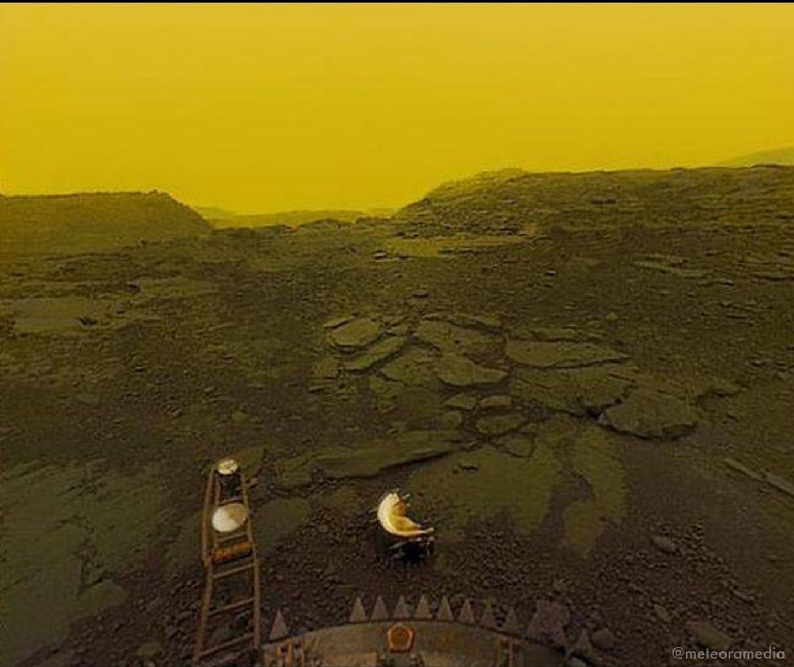
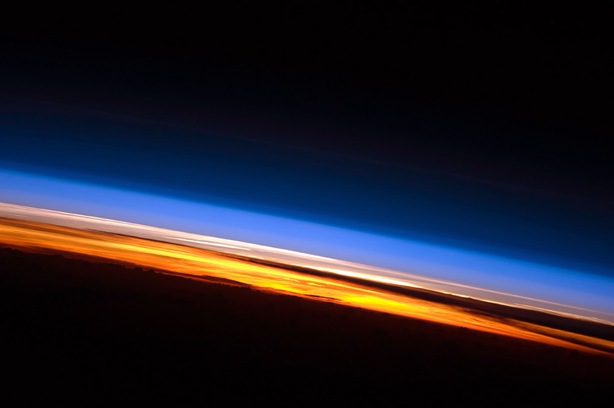
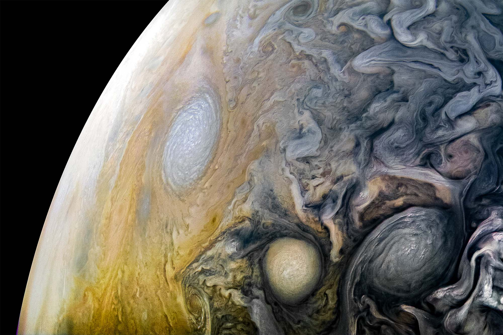
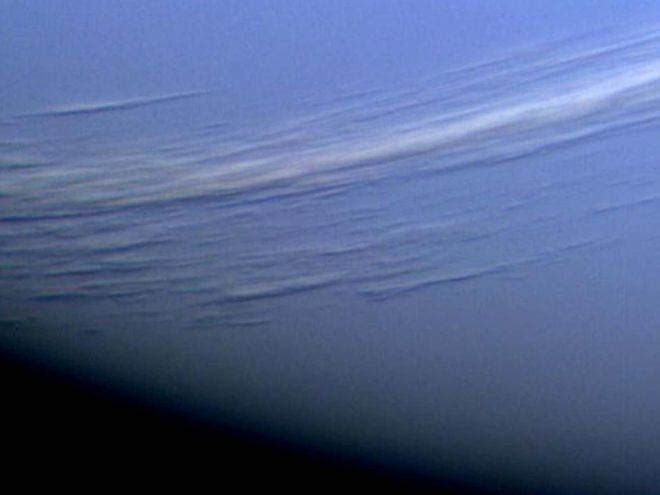

Planetary Fact Sheet - Metric
The Solar System
The Solar System is made up of a star, eight planets, and countless smaller bodies such as dwarf planets, asteroids, and comets. Our solar system orbits the center of the Milky Way galaxy at about 828,000 kph
| Venus | Jupiter | Neptune | Earth | |
|---|---|---|---|---|
| Images |  |
 |
 |
 |
| Planet Type | Terrestrial | Terrestrial | Gass Giant | Gass Giant |
| Mass (1024kg) | 4.87 | 5.97 | 1898 | 102 |
| Diameter(km) | 12,104 | 12,756 | 142,984 | 49,528 |
| Gravity (m/s2) | 8.9 | 9.8 | 23.1 | 11.0 |
| Day (hours) | 2802.0 | 24.0 | 9.9 | 16.1 |
| Distance From Sun(106 km) | 108.2 | 149.6 | 778.5 | 4515 |
| Number of Moons | 0 | 1 | 92 | 14 |
| Mean Temperature(C) | 464 | 15 | -110 | -200 |
| Closeups |  |  |  |  |
Data provided by NASA